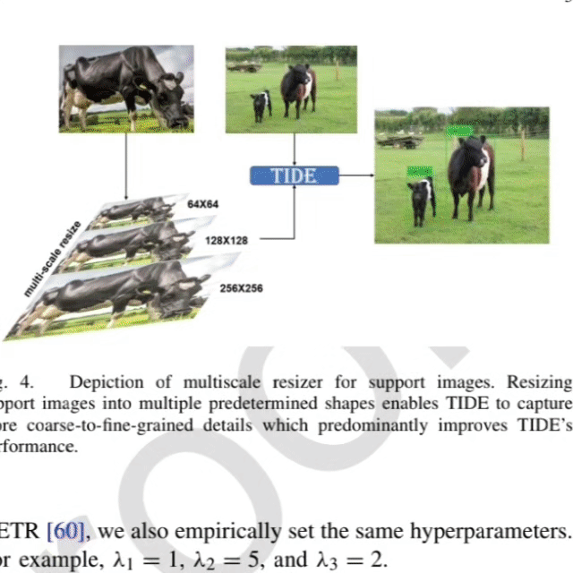

It looks like you're accessing a static
version of the site due to a low-bandwidth network connection.
For an enhanced experience with more features, please visit
Link.
|
阮宇迪
Yudi Ruan
|
2023 National Undergraduate Scholarship 🎖
2024 National Inspirational Scholarship 🎖
2023 Model Student
2023,2024 Advanced Individual in Technology
2023,2024 Outstanding Student
|
2023 National Undergraduate Scholarship 🎖
2024 National Inspirational Scholarship 🎖
2023 Model Student
2023 Advanced Individual in Technology
2023 Outstanding Student
Hello, I am Ruan Yudi. I am currently an undergraduate student majoring in Artificial Intelligence
at the School of Information Science and Engineering, Chongqing Jiaotong University. My current job
focuses on Visual Language Model. At the same time, I am conducting market research and am
passionate about building an artificial intelligence company (CORTEX) that empowers traditional
industries.
I’m currently seeking a PhD or Master position for Fall
2026 admission.üåü
Awards üèÜ

1) International
Honorable Mention 📐
Mathematical Contest in Modeling / Interdisciplinary Contest in Modeling (MCM/ICM)
2) National
1st. Prize 🥇
RAICOM Robotics Developer Competition (RAICOM) CAIR Engineering National Finals (2024)
1nd. Prize 🥇
National College Business Elite Challenge National Finals (2024)
2nd. Prize 🥈
The 26th China Robotics and Artificial Intelligence Competition National Finals (2024)
3rd. Prize 🥉
The 8th 'Hangda Data Cup' National College Intelligent Transportation Innovation and
Entrepreneurship Competition National Finals (2024)
3) Provincial
1st. Prize 🥇
National College Student Mathematical Modeling Competition (2023)
2nd. Prize 🥈
The 18th National College Student Intelligent Vehicle Competition, iFlytek Track (2023)
2nd. Prize 🥈
The 18th National College Student Intelligent Vehicle Competition, Baidu Track (2023)
2nd. Prize 🥈
The 16th China College Students Computer Design Competition (2023)
2nd. Prize 🥈
The 11th "Datang Cup" National College Student New Generation Information and Communication Technology Competition
2nd. Prize 🥈
China International University Student Innovation Competition (2024) Chongqing Division
3rd. Prize 🥉
China Software Cup University Student Software Design Competition (2023)
|
|
|
Chongqing Jiaotong University
Undergraduate Student
Rank 1/65 GPA:4.15/5.00
Few Shot Object Detection, Image Restoration
advised by Prof. Weikai Li
China. 2022/7 - present
|
|
|
Shanghai Panoramic Medical Imaging Technology Co.,
Ltd
Research Intern
Application of diagnosis of brain disorders
Shanghai, China. 2023/7 - 2024/9
|
|
|
CORTEX Technology Co., Ltd
Co-Founder
Embodied AI, RAG AI Agent
Taizhou, China. 2024/8 - present
|
|
|
Hedra. Inc
Deep Learning Intern
Parallelization, Quantization, Realtime-Avatar
California, USA. 2024/10 - 2025/8
|
|
|
Zhejiang Starlord Robotic Technology Co.,
Ltd
Chairman's Secretary
Zhejiang, China. 2024/10 - present
|
Research üí°
Interests:
¬∑ Multi-Modality Representation Learning 🌟
¬∑ Domain Adaptation 🔁
¬∑ Few Shot Object Detection 🎯
|
ECAFormer: Low-light Image Enhancement using Cross Attention
Yudi Ruan,
Hao Ma,
Weikai Li,
Xiao Wang
Low-light image enhancement (LLIE) is critical in computer vision. Existing LLIE methods often
fail to discover the underlying relationships between different sub-components, causing the loss
of complementary information between multiple modules and network layers, ultimately resulting
in the loss of image details. To beat this shortage, we design a hierarchical mutual Enhancement
via a Cross Attention transformer (ECAFormer), which introduces an architecture that enables
concurrent propagation and interaction of multiple features. The model preserves detailed
information by introducing a Dual Multi-head self-attention (DMSA), which leverages visual and
semantic features across different scales, allowing them to guide and complement each other.
Besides, a Cross-Scale DMSA block is introduced to capture the residual connection, integrating
cross-layer information to further enhance image detail. Experimental results show that
ECAFormer reaches competitive performance across multiple benchmarks, yielding nearly a 3%
improvement in PSNR over the suboptimal method, demonstrating the effectiveness of information
interaction in LLIE.
[Paper]
[DOI]
Keywords: Image Restoration, Cross Attention, Transformer, Feature fusion.
Engineering Applications of Artificial Intelligence
MFCP: Identification of Major Depressive Disorder Using Multiple Functional Connection Pattern
Yudi Ruan*,
Ling Zhang*,
Liling Peng*,
Weikai Li,
Xin Gao
* Co-first authorship
Major depressive disorder (MDD) poses a significant challenge to global mental health,
necessitating the development of sophisticated diagnostic tools for its early and accurate
detection. Currently, rs-fMRI has attracted considerable attention in evaluating MDD through
functional brain networks (FBNs). The advent of graph convolutional networks (GCNs) has
revolutionized the analysis of FBNs by capturing the complex interregional connection patterns
that underlie neurological disorders, including MDD. However, existing GCN-based methodologies
have predominantly concentrated on the examination of FBNs through a single topological
structure, thereby neglecting the rich, multifaceted information encoded within various
connection patterns. This limitation hinders the full realization of GCNs' potential in MDD
diagnosis. To address this, we propose the Multiple Functional Connection Pattern Graph
Convolutional Network (MFCP), an innovative framework that integrates three distinct connection
patterns—Sparse Representation (SR), Partial Correlation (PC), and Granger Causality Mapping
(GCM)—to harness the synergistic insights they provide. Our preliminary investigation integrates
multiple graph convolutional modules to amalgamate diverse connection information, thereby
enriching the MDD diagnostic features extracted from FBNs. To evaluate the proposed MFCP, we
conduct experiment on the REST-MDD dataset with 533 subjects. The experimental results indicate
that our MFCP attained an accuracy rate of 87.74% and an AUC score of 0.9326, confirming the
effectiveness of our MFCP.
Keywords: Resting-state fMRI; Connection patterns; Functional brain network; Graph
convolutional network; Major depressive disorders.
Under Review
Accelerating Hybrid Rice Breeding with In-Field Based on Grid Mapping and Agri-UGV
Huaiqu Feng,
Yudi Ruan,
Te Xi,
Yulei Pan,
Dongdong Du,
Yongwei Wang
This research presents a comprehensive study on the contour mapping of rice
canopies for Agricultural Unmanned Ground Vehicles (Agri-UGVs) operating in
complex, unknown hybrid rice fields. Accurate Mapping is crucial for these vehicles to
plan their operational areas efficiently while steering clear of protected zones. The
motion equations that underpin the control of Agri-UGVs tasked with intelligent impurity
removal heavily rely on the precise measurements of hybrid rice height and canopy
contour. Therefore, the accurate estimation of these parameters is vital for the effective
perception and operation of Agricultural robots. The Agri-UGV, equipped with
advanced RGB-D depth sensors, facilitates the collection of distance measurements
and the perception of the surrounding hybrid rice canopy's geometrical structure. This
introduces an innovative mapping estimation and algorithm tailored for the hybrid rice
canopy contour, utilizing a combination of kinematic and inertial measurements to
achieve proprioceptive localization of the Agri-UGV. The algorithm incorporates an
inference framework for grid mapping, which leverages real-time RGB-D data to
iteratively refine the probabilistic distributions of the canopy's morphological properties.
This is achieved by correlating the hybrid rice height intercept with in-field data while
accounting for drift and uncertainty in the state estimation process. The result is a set
of probabilistic contour estimates formatted as grid-based elevation maps. The
proposed algorithm has been designed to operate in real-time within the ROS-Jetson
system, and its performance is rigorously evaluated using metrics such as relative and
absolute pose error. The algorithm has been successfully deployed on a High-
clearance Agri-UGV platform, demonstrating its ability to accurately estimate rice
canopy height's morphological properties in various paddy field environments. It also
details the experiments conducted to explore the Agri-UGV's mapping capabilities
within the cluttered hybrid rice environment. This research significantly contributes to
the field of autonomous agricultural operations by enhancing the precision and
reliability of canopy contour mapping, which is essential for the effective navigation and
task execution of Agri-UGVs in intricate agricultural settings.
Keywords: Crops, Phenotypic, Robot vision systems, Stereo image processing, Canopy mapping
learning.
Under Review
nUGV-1UAV robot swarms: low-altitude remote sensing-based decentralized planning framework in-field environments
Huaiqu Feng,
Yudi Ruan,
Dongfang Li,
Te Xi,
Yulei Pan,
Yongwei Wang,
Jun Wang
Hybrid-rice seed production demands rapid removal of heterologous plants. We present a decentralized nUGV-
1UAV framework that couples low-altitude remote sensing with on-board swarm planning to accomplish this task
in large paddy fields. A single UAV performs one-off high-resolution mapping; thereafter, multiple UGVs rely
solely on the downloaded map and peer-to-peer communication to execute impurity removal. A topology-guided
hybrid A* planner generates homotopy-consistent routes, while a decoupled space–time optimizer refines trajectories
for curvature and collision constraints. Field experiments covering 12.7 acres with 73 impurity targets
show that a fleet of six UGVs finishes the task in 1.21 h, attaining an individual UGV efficiency of 6 989 m2/h
(≈10.5 acres/h). The optimal UGV-to-impurity ratio is 0.47: 5.75: 1 (UGV: impurities: acre). Simulations up to
200 acres demonstrate linear scalability with 5 % deviation from the analytical model. Even when the UAV is
disabled, UGVs maintain 92 % task completion using offline maps, confirming robust decentralization.
[DOI]
Keywords: Smart agriculture, Autonomous navigation, Swarm robotics, Low-altitude remote sensing, Motion planning
learning.
ISPRS Journal of Photogrammetry and Remote Sensing

1UGV-nUAV: In-Field Environments called the Energy-Constrained and Charging Station Low-altitude Remote Sensing-based Motion Planning
Huaiqu Feng,
Yudi Ruan,
Dongfang Li,
Te Xi,
Yulei Pan,
Yongwei Wang,
In contemporary smart agriculture, multi-machine collaboration among agricultural robotic is increasingly
essential for navigating vast hybrid paddy fields. This paper presents the Energy-Constrained and Charging
Station Low-altitude Remote Sensing-based Motion Planning (ECS-LRSMP), a novel approach for cooperative
UGV-UAV systems in agricultural field exploration. The 1UGV-nUAV algorithm effectively addresses the
challenges of energy constraints and path optimization through a five-step process: computing Voronoi
Tessellations for charging station placement, solving the Hitting Set problem to select an optimal charging
station set, applying a gravitational optimization algorithm to minimize UGV travel distance, and solving the
Traveling Salesman Problem (TSP) for both UGV and UAV. This approach combines traditional combinatorial
techniques with modern evolutionary algorithms to optimize travel distance. Simulation results demonstrate the
algorithm's effectiveness in generating a coordinated plan that optimizes the performance of the hybrid UGV-
UAV system in exploration scenarios. The findings highlight the significance of key parameters such as the
maximum UAV flight distance ùëÖ and the number of clusters ùõø in designing efficient ECS-LRSMP instances.
For example, increasing ùëÖ by 300% (from 3 to 9) raises UAV travel distance by 35% and UGV travel distance
by 15%, establishing a positive correlation between R and total mission distance. Reducing ùõø from 15 to 5
cuts UGV travel distance by 28% and total mission distance by 32%, confirming a positive correlation between
ùõø and total mission distance. Future research will explore incorporating environmental constraints, online UAV
path planning, and refining the algorithm for broader applicability.
Keywords: Smart agriculture, Heterogeneous Robots, Multi-machine collaboration, Low-altitude remote sensing, Motion planning
learning.
Under Review
SKPNet: snake KAN perceive bridge cracks through semantic segmentation
Yudi Ruan,
Di Wang,
Yijing Yuan,
Shixin Jiang,
Xianyi Yang
As the demands for ensuring bridge safety continue to rise, crack detection technology has become more crucial than
ever. In this context, deep learning methods have been widely applied in the field of intelligent crack detection for
bridges. However, existing methods are often constrained by complex backgrounds and computational limitations,
struggling with issues such as weak crack continuity and insufficient detail representation. Inspired by biological
mechanisms, a dynamic snake convolution (DSC) with tubular offsets is incorporated to tackle these challenges ef-
fectively. Additionally, a channel-wise self-attention (CWSA) mechanism is introduced to efficiently fuse multi-scale
features in U-Net, significantly enhancing the ability of the model to capture fine details. In the classification head,
the traditional linear layer is replaced with a Kolmogorov-Arnold network (KAN) structure, which strengthens the
robustness and generalization capacity of the model. Experimental results demonstrate that the proposed model im-
proves detection accuracy, achieving a mean intersection over union (mIoU) of 0.877, while maintaining almost the
same number of parameters, showcasing exceptional performance and practical applicability. Our project is released
at https://github.com/ruanyudi/KanSeg-Bi.
[DOI]
Keywords: Crack detection, Dynamic snake convolution, KAN, Attention, U-Net, Biomimetric
learning.
Intelligence & Robotics
Contrastive Clustering-driven Topological Organization Unveils Characterization of Hybrid-rice with In-Field for Variety Purification
Huaiqu Feng,
Te Xi,
Yudi Ruan,
Dunhong Yang,
Yulei Pan,
Rongkai Shi,
Bo Chen,
Yongwei Wang,
Jun Wang
Hybrid-rice seed production technology is a significant contributor to the high yield. The way
to improve seed production's yield and quality is purification. With the functional requirements
of the intelligent Undesired-rice removal process, the environmental elements of field operation
and the morphological parameters of Desired-rice and Undesired-rice are collected and measured.
The hybrid rice phenotypic of the multiple growth stages was collected to explore topological
organization unveiling the hybrid rice in-field for variety purification. The phenological
growth stages include the elongation, booting, heading, and filling stages. Expert knowledge on
identifying abnormal mature varieties within hybrid rice was incorporated to ensure accuracy in
variety purification. Then, the data was collected using the self-supervised learning
visualization method for deep cluster analysis. The proposed method, the t-SimCLR algorithm,
uses Contrastive Learning and neighbor embeddings to visualize high- dimensional data. The
parametric mapping is trained from the high-dimensional pixel space into two dimensions and
achieves classification accuracy by the t-SimCLR algorithm. The semantic relationships of
Undesired-rice and Desired-rice data are faithfully captured. Finally, the preliminary results
from the expert's prior knowledge are compared with the deep cluster analysis results to explore
the topological organization of the hybrid rice in-field. Last, the integration of expert prior
knowledge in the detection of panicles was showcased. The study culminates in demonstrating the
integration of expert knowledge in the detection of panicles, which is crucial for accurately
identifying and detecting abnormal mature varieties. This study contributes to the advancement
of hybrid rice purification techniques and sets the stage for developing more sophisticated
intelligent systems for agricultural applications.
[DOI]
Keywords: Hybrid-rice, Phenotypic, Visualization, Data integration, Contrastive
learning.
Expert Systems with Applications

TIDE: Test-Time Few Shot Object Detection
Weikai Li,
Hongfeng Wei,
Yanlai Wu,
Jie Yang,
Yudi Ruan,
Yuan Li,
Ying Tang
Few-shot object detection (FSOD) aims to extract semantic knowledge from limited object
instances of novel categories within a target domain. Recent advances in FSOD focus on
fine-tuning the base model based on a few objects via meta-learning or data augmentation.
Despite their success, the majority of them are grounded with parametric readjustment to
generalize on novel objects, which face considerable challenges in Industry 5.0, such as 1) a
certain amount of fine-tuning time is required and 2) the parameters of the constructed model
being unavailable due to the privilege protection, making the fine-tuning fail. Such constraints
naturally limit its application in scenarios with real-time configuration requirements or within
black-box settings. To tackle the challenges mentioned above, we formalize a novel FSOD task,
referred to as test-time few-shot detection (TIDE), where the model is un-tuned in the
configuration procedure. To that end, we introduce an asymmetric architecture for learning a
support-instance-guided dynamic category classifier. Further, a cross-attention module and a
multiscale resizer are provided to enhance the model performance. Experimental results on
multiple FSOD platforms reveal that the proposed TIDE significantly outperforms existing
contemporary methods.
[DOI]
Keywords: Cross Attention, Few-shot Detection, Test Time.
IEEE Transactions on Systems, Man, and Cybernetics Systems
Towards an accurate autism spectrum disorder diagnosis: multiple connectome views from fMRI data
Jie Yang*,
Xiaowen Xu*,
Mingxiang Sun*,
Yudi Ruan,
Chenhao Sun,
Weikai Li,
Xin Gao
* Co-first authorship
Functional connectome has revealed remarkable potential in the diagnosis of neurological
disorders, e.g. autism spectrum disorder. However, existing studies have primarily focused on a
single connectivity pattern, such as full correlation, partial correlation, or causality. Such
an approach fails in discovering the potential complementary topology information of FCNs at
different connection patterns, resulting in lower diagnostic performance. Consequently, toward
an accurate autism spectrum disorder diagnosis, a straight-forward ambition is to combine the
multiple connectivity patterns for the diagnosis of neurological disorders. To this end, we
conduct functional magnetic resonance imaging data to construct multiple brain networks with
different connectivity patterns and employ kernel combination techniques to fuse information
from different brain connectivity patterns for autism diagnosis. To verify the effectiveness of
our approach, we assess the performance of the proposed method on the Autism Brain Imaging Data
Exchange dataset for diagnosing autism spectrum disorder. The experimental findings demonstrate
that our method achieves precise autism spectrum disorder diagnosis with exceptional accuracy
(91.30%), sensitivity (91.48%), and specificity (91.11%).
[DOI]
Keywords: autism spectrum disorder; multi kernel learning; partial correlation; Pearson's
correlation; Granger causality.
Cerebral Cortex
Multipattern graph convolutional network-based autism spectrum disorder identification
Wenhao Zhou*,
Mingxiang Sun*,
Xiaowen Xu*,
Yudi Ruan,
Chenhao Sun,
Weikai Li,
Xin Gao
* Co-first authorship
The early diagnosis of autism spectrum disorder (ASD) has been extensively facilitated through
the utilization of resting-state fMRI (rs-fMRI). With rs-fMRI, the functional brain network
(FBN) has gained much attention in diagnosing ASD. As a promising strategy, graph convolutional
networks (GCN) provide an attractive approach to simultaneously extract FBN features and
facilitate ASD identification, thus replacing the manual feature extraction from FBN. Previous
GCN studies primarily emphasized the exploration of topological simultaneously connection
weights of the estimated FBNs while only focusing on the single connection pattern. However,
this approach fails to exploit the potential complementary information offered by different
connection patterns of FBNs, thereby inherently limiting the performance. To enhance the
diagnostic performance, we propose a multipattern graph convolution network (MPGCN) that
integrates multiple connection patterns to improve the accuracy of ASD diagnosis. As an initial
endeavor, we endeavored to integrate information from multiple connection patterns by
incorporating multiple graph convolution modules. The effectiveness of the MPGCN approach is
evaluated by analyzing rs-fMRI scans from a cohort of 92 subjects sourced from the publicly
accessible Autism Brain Imaging Data Exchange database. Notably, the experiment demonstrates
that our model achieves an accuracy of 91.1% and an area under ROC curve score of 0.9742.
Keywords: resting-state fMRI; autism spectrum disorder; multipattern; brain connectivity
networks; graph convolution network.
Cerebral Cortex
Few-shot segmentation with duplex network and attention augmented module
Sifu Zeng,
Jie Yang,
Wang Luo,
Yudi Ruan
Establishing the relationship between a limited number of samples and segmented objects in
diverse scenarios is the primary challenge in few-shot segmentation. However, many previous
works overlooked the crucial support-query set interaction and the deeper information that needs
to be explored. This oversight can lead to model failure when confronted with complex scenarios,
such as ambiguous boundaries. To solve this problem, a duplex network that utilizes the
suppression and focus concept is proposed to effectively suppress the background and focus on
the foreground. Our network includes dynamic convolution to enhance the support-query
interaction and a prototype match structure to fully extract information from support and query.
The proposed model is called dynamic prototype mixture convolutional networks (DPMC). To
minimize the impact of redundant information, we have incorporated a hybrid attentional module
called double-layer attention augmented convolutional module (DAAConv) into DPMC. This module
enables the network to concentrate more on foreground information. Our experiments on PASCAL-5i
and COCO-20i datasets suggested that DPMC and DAAConv outperform traditional prototype-based
methods by up to 5–8% on average.
[DOI]
Keywords: few-shot segmentation, semantic segmentation, mixture models, duplex mode,
attention module
Frontiers in Neurorobotics
Altered intra- and inter-network connectivity in autism spectrum disorder
Rui Zhou*,
Chenhao Sun*,
Mingxiang Sun*,
Yudi Ruan,
Weikai Li,
Xin Gao
* Co-first authorship
A neurodevelopmental illness termed as the autism spectrum disorder (ASD) is described by social
interaction impairments. Previous studies employing resting-state functional imaging (rs-fMRI)
identified both hyperconnectivity and hypoconnectivity patterns in ASD people. However, specific
patterns of connectivity within and between networks linked to ASD remain largely unexplored.
Methods: We utilized a meticulously selected subset of high-quality data, comprising 45
individuals diagnosed with ASD and 47 HCs, obtained from the ABIDE dataset. The pre-processed
rs-fMRI time series signals were partitioned into ninety regions of interest. We focused on
eight intrinsic connectivity networks and further performed intra- and inter-network analysis.
Finally, support vector machine was used to discriminate ASD from HC. Results: Through different
sparsities, ASD exhibited significantly decreased intra-network connectivity within default mode
network and dorsal attention network, increased connectivity between limbic network and
subcortical network, and decreased connectivity between default mode network and limbic network.
Using the classifier trained on altered intra- and inter-network connectivity, multivariate
pattern analyses classified the ASD from HC with 71.74% accuracy, 70.21% specificity and 75.56%
sensitivity in 10% sparsity of functional connectivity. Conclusions: ASD showed characteristic
reorganization of the brain networks and this provided new insight into the underlying process
of the functional connectome dysfunction in ASD.
Keywords: autism spectrum disorder, inter-network connectivity, intra-network connectivity,
support vector machine, functional brain network
Aging
RX7: hexapod spider robot
It integrates NVIDIA Jetson series development kits and Intel Realsense cameras, equipped with
16 high-precision servos. The robot's body is designed and cut from carbon fiber plates.
Currently, it is capable of autonomous mapping and navigation,
as well as target tracking, making it suitable for exploring complex terrains and performing
various tasks. The future work involves integrating LLMs to create an embodied AI.
Keywords: SLAM, Mechanical Design
Under Development
Huanshi: 3D Medical Imaging Data Analysis Platform
This project is an AI-based 3D medical imaging data analysis system that utilizes
state-of-the-art machine vision models. It intelligently analyzes multimodal medical imaging
data, including CT and MRI scans, to automatically segment and visualize relevant areas, such as
15 abdominal
organs and tumors. The project employs a Client/Server (C/S) architecture, with
visualization handled on the client side via ITK, and data augmentation and model inference
managed on the server side. The server side utilizes the industry-leading
Kubernetes (K8S) distributed architecture for cloud computing, deploying inference engines in
containers to achieve automatic scaling and fault tolerance, resulting in high performance and
high availability.
Keywords: K8S, Deep-learning, Medical Science
Chongqing Provincial Innovation Project
Train Multi-Source Fusion Perception System
It utilizes NVIDIA Jetson series development kits and Intel Realsense series
cameras. It aims to measure the real-time velocity and location of urban trains through visual
(monocular/stereo) and accelerometer data, constructing a visual inertial odometry system to
replace traditional wheel encoders.
Keywords: SLAM, Visual Odometry
Chinese National Innovation Project
Image Enhancement and Analysis System
An integrated platform that integrates image enhancement models and high-level vision
models, aimed at assisting with dataset annotation and enhancement. It uses ONNX for model
deployment.
Keywords: QT, Model Deployment
Under Development
CORTEX Chat Agent
Built a customizable AI agent based on RAG technology, which helps to mitigate LLM
hallucinations and accelerate the deployment of LLMs. It is inspired by NVIDIA's online course
"Building
RAG Agent with LLMs".
Keywords: SLMs, LLMs, RAG
Under Development
Empowering Traditional Industries with Knowledge:
Web Design for Tocore
Keywords: HTML, CSS, JavaScript, Nginx
FingerPrint Extractor designed for Safe Security
Keywords: Tracking, FingerPrint, Thinning Methods
[
 Code]
Code]
|
 Google Scholar
Google Scholar